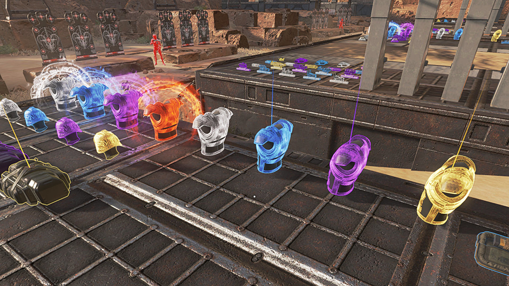
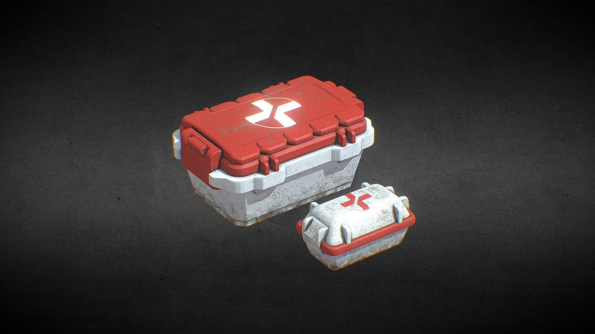
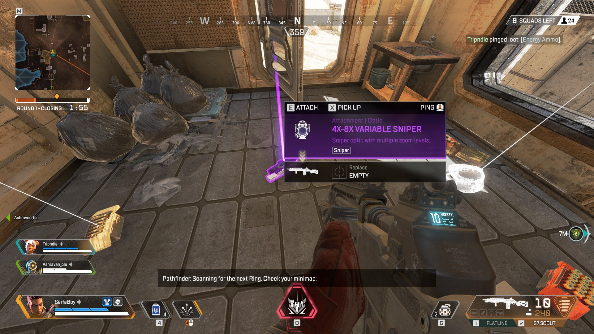
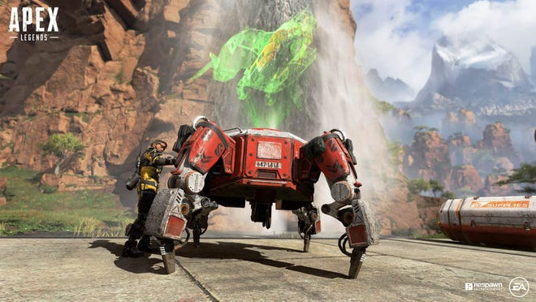

Some In Game Tips!
Alright, to get started we have the different kind of body armors that are in the game. The levels are represented by the different colors in the order of white, blue, purple, gold, and red being the best. This is the same with gun attachments and other gear around the map. After that we have Medkits and syringes. These will heal you up quick and get you back into the fight as long as you have cover and the time to use them. These items aren't difficult but are extermely necessary especially late into the match. Next is just a quick example of what a higher level sight for a gun looks like. Equipment like this can be pingged for teammates who could use that for their load out. Lastely, we have the respawn beacon. Once a player dies you can grab their banner from their death box and run it on over to a respawn beacon and it will revive them. It's a great way to help get you back into a match unless there are a lot of enemys still around once you are brought back because this gives you the chance to be eliminated again.
   >